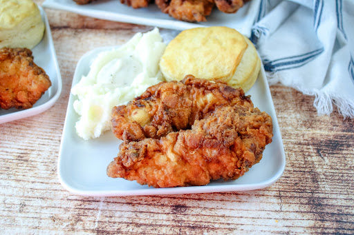

Uncle Clay's Famous Southern Fried Chicken

Description
This fried chicken recipe is THE BOMB . If you love southern comfort food like I do then you have to try this recipe. The trick is getting the breading and fry right to create that amazing crunch you want from fried chicken. Pair this with my Uncle Clay's Famous Biscuits for a truly decadent Texan dinner.
Ingredients
- 1 whole chicken cut up
- 2 cups buttermilk
- 2 Tbsp Franks Red Hot sauce
- 2 cup all-purpose flour
- 1 cup cornstarch
- peanut oil for frying
- 2 tsp salt
- .5 Tbsp dried thyme
- .5 Tbsp dried basil
- 1 tsp dried oregano
- 1 tsp celery salt
- .5 Tbsp black pepper
- 1 Tbsp mustard powder
- 2 Tbsp paprika
- 2 Tbsp garlic salt
- 1 Tbsp powdered ginger
- 1 Tbsp pepper
- 2 tsp onion powder
- 1 tsp cayenne pepper
Steps
- Place the chicken in a large mixing bowl. Add the salt, garlic powder and onion powder to the chicken. Toss to combine.
- Add the buttermilke and hot sauce to the bowl and stir to combine. Cover and let marinate in the fridge for at least 2 hours, up to overnight.
- In another mixing bowl, whisk together the flour, cornstarch, salt, paprika, cayene pepper, and black pepper to make the dredge.
- Fill the fryer with peanut oil and preheat to 350°F. Cast iron can be used instead but monitor the heat.
- Remove the chicken from the marinade and coat in the flour mixture one at a time. Shake off any excess flour mixture and set the chicken aside to let the coating set.
- Carefully add the chickenm to the fryer. Don't overfill the fryer, 3-4 pieces at a time will do. Fry until golden brown, about 10-12 minutes, turning every few minutes. The chicken is done at an internal temperature of 165°F.
- Carefully remove the chicken from the fryer and place it on a paper towel lined sheet tray and sprinkle some flaked salt on top. Let the chicken rest for about 5 minutes before serving.